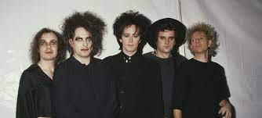

THE CURE

Ficha Técnica
The Cure es una banda británica de rock formada en 1976 en Crawley. En sus orígenes, se llamó Easy Cure por un breve período, y ya figuraba en sus filas uno de sus tres fundadores y futuro líder, Robert Smith, como guitarra solista
Género:
Rock gótico, Rock alternativo, New wave
Origen:
Crawley, Inglaterra, Reino Unido
Discografía
Año |
Nombre del álbum |
Fecha publición |
Discográfica |
Formato |
| 1979 | Three Imaginary Boys | 8 de mayo de 1979 | Fiction Records | CS, LP, CD, 2xCD |
| 1980 | Seventeen Seconds | 22 de abril de 1980 | Fiction Records | CS, LP, CD |
| 1981 | Faith | 14 de abril de 1981 | Fiction Records | CS, LP, CD |
| 1982 | Pornography | 4 de mayo de 1982 | Fiction Records | CS, LP, CD |
| 1984 | The Top | 22 de mayo de 1984 | Fiction Records | CS, LP, CD |
| 1985 | The Head on the Door | 13 de agosto de 1985 | Fiction Records | CS, LP, CD |
| 1987 | Kiss Me, Kiss Me, Kiss Me | 25 de mayo de 1987 | Fiction Records | CS, LP, CD |
| 1989 | Disintegration | 2 de mayo de 1989 | Fiction Records | CS, LP, 2xLP, CD |
| 1992 | Wish | 21 de abril de 1992 | Fiction Records | CS, 2xLP, CD |
| 1996 | Wild Mood Swings | 7 de mayo de 1996 | Fiction Records | CS, 2xLP, CD |
| 2000 | Bloodflowers | 15 de febrero de 2000 | Fiction Records | CS, 2xLP, CD |
| 2004 | The Cure | 29 de junio de 2004 | Fiction Records | CS, 2xLP, CD |
| 2008 | 4:13 Dream | 27 de octubre de 2008 | Fiction Records | Doble LP, CD |